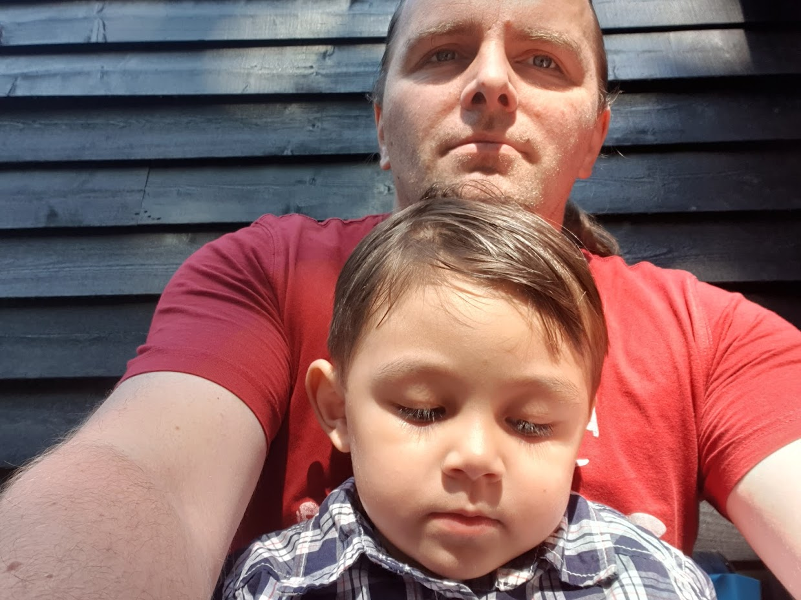

Mijn eigen even voorstellen
Hallo Mijn Naam is Chris. ik ben 41 jaar oud.
Ik Ben geboren in wandsworth UK, toen ik 10 jaar oud was ben ik naar Nederland Verhuisd.
had heel lang in Gorinchem gewoond, op een latere leeftijd naar Oosterhout Verhuisd.
Ik woon samen met mijn vrouw Kathleen en mijn twee kinderen, twee jongens van bijna 1 en 4. Tyler en Matthew.
Ik werk bij Koninklijke Merba als Technische Operator controles op Agv`s automated guided vehicles.